チュートリアル概要 :
OCIのMonitoring・サービスでもカスタム・メトリックを作成することができますが、Stack Monitoringのメトリック拡張を利用することで面倒なスクリプト作成をせずにGUIベースで簡単にユーザ独自のメトリック監視を設定できます。
このチュートリアルでは、Stack Monitoring のメトリック拡張を設定する手順をご紹介します。
所要時間 : 約30分
前提条件1 : テナンシ上で以下のリソースが作成済であること
- コンパートメント
- ユーザー
- ユーザーグループ
- VCN
- 対象リソース
前提条件2 : Stack Monitoring が有効化済みであること
こちらを参考にStack Monitoringを有効化できます。
前提条件3 : Stack Monitoringで対象リソースが監視されていること
1.メトリック拡張の作成
本チュートリアルでは例としてデータベースに登録されているユーザー数を取得するメトリックを追加します。
「メトリック拡張の作成」をクリックします。
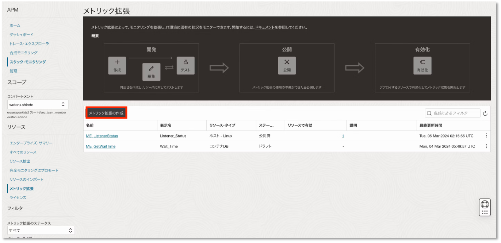
メトリック拡張のプロパティの項目は以下のように設定します。
- 名前：ME_任意の名前
- 表示名：任意の表示名
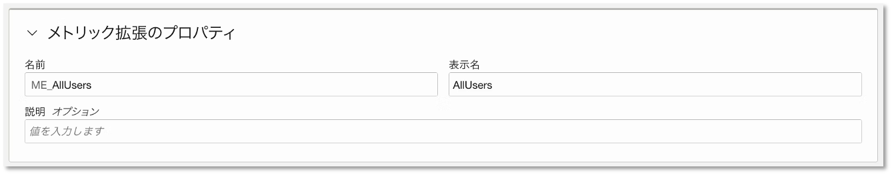
収集方法のプロパティは以下のように設定します。
- リソース・タイプ：コンテナDB
- 収集方法：SQL
- 収集頻度：任意の時間
- SQL問合せ：SELECT COUNT(*) from ALL_USERS;
リソースタイプと収集方法について
ホストの場合はリソース・タイプをホスト、OSコマンドの場合は収集方法をOSコマンドなどに設定します。
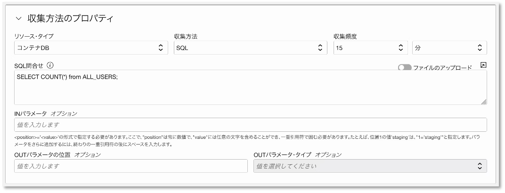
メトリック/ディメンションの項目は以下のように設定します。
- 名前：任意の名前
- 表示名：任意の表示名
- ディメンションですか。：なし
- 非表示ですか。：なし
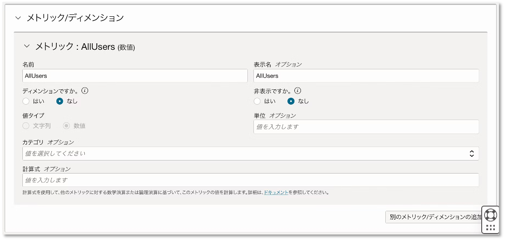
メトリック拡張のプロパティ、収集方法のプロパティ、メトリック/ディメンションの項目を設定したら、「作成とテスト」をクリックします。 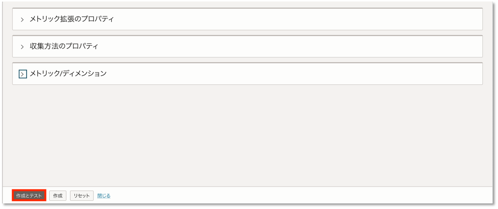
リソースの選択に適当なデータベースを選択して「テスト」をクリックします。 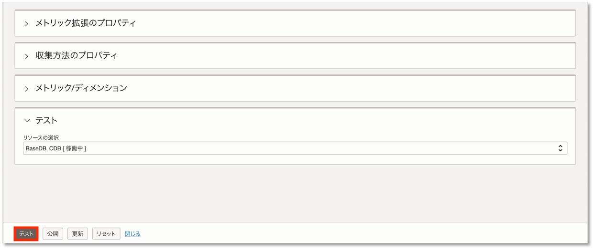
テストが成功したら公開をクリックします。
公開について
公開後は各項目について、編集ができなくなります。
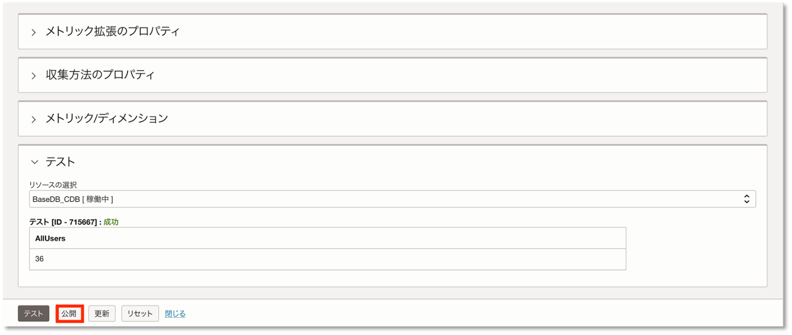
2.メトリック拡張の有効化
公開が完了したら、有効化します。 作成したメトリックの3点リーダーから「有効化」をクリックします。 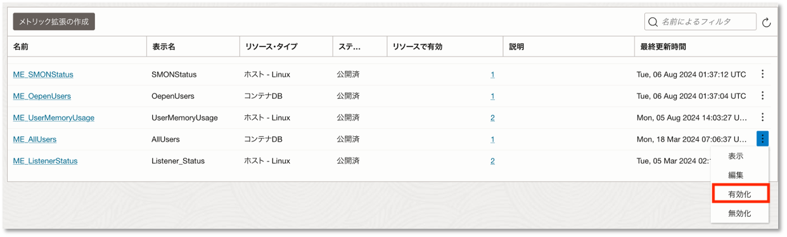
「リソースの選択」をクリックします。 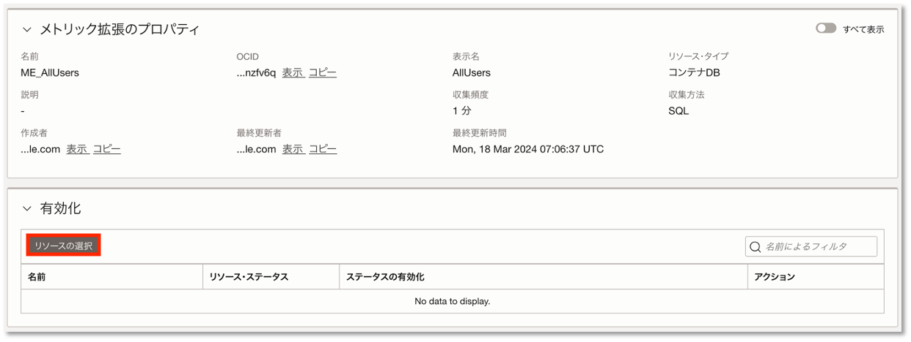
該当のリソースを選択し、「選択したリソースで有効化」をクリックします。 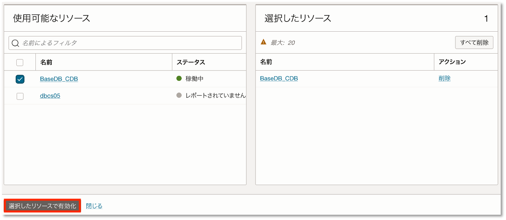
3.作成されたメトリックの確認
有効化が完了すると該当リソースのチャート欄に作成したメトリックが追加されます。 メトリック拡張で追加したメトリックはメトリック名の横に＊が表示されます。 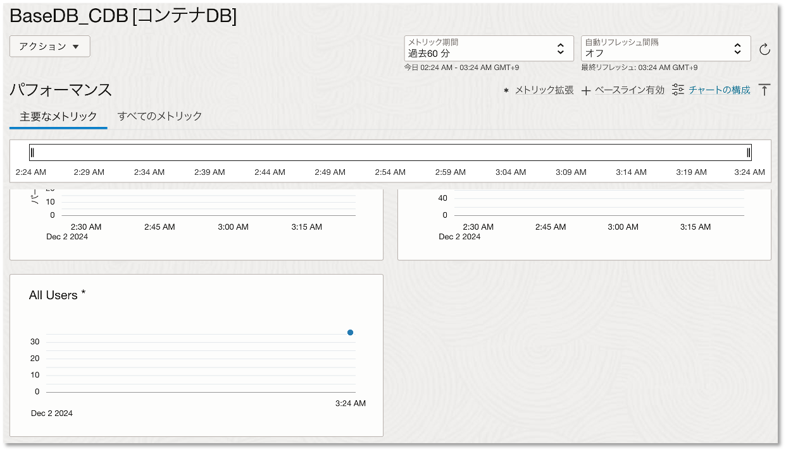
4.アラームの作成
メトリック拡張で追加したメトリックはoracle_metric_extensions_appmgmtを使用することでアラームを設定することができます。 詳細のアラーム作成手順についてはこちらをご確認ください。